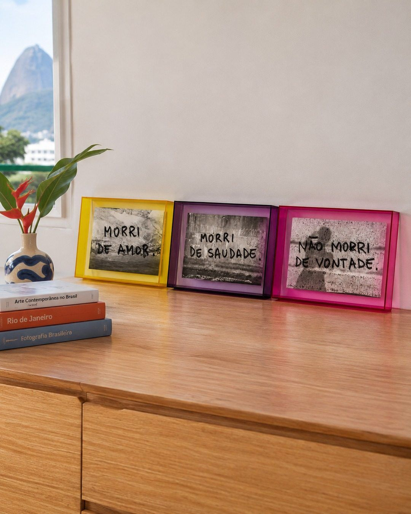
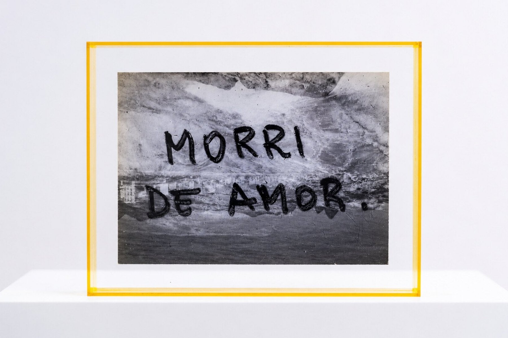
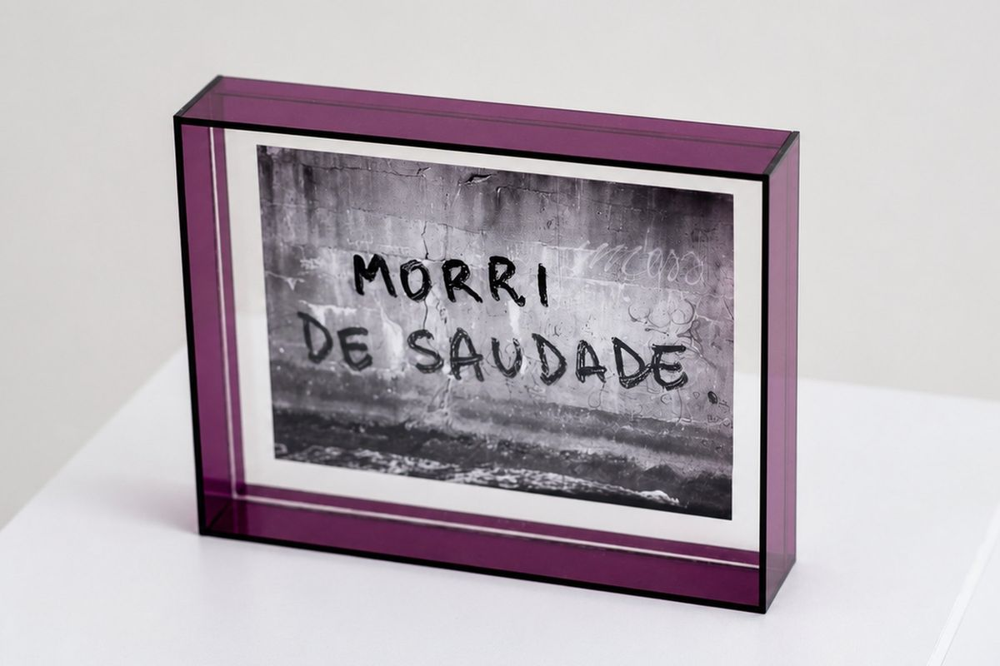
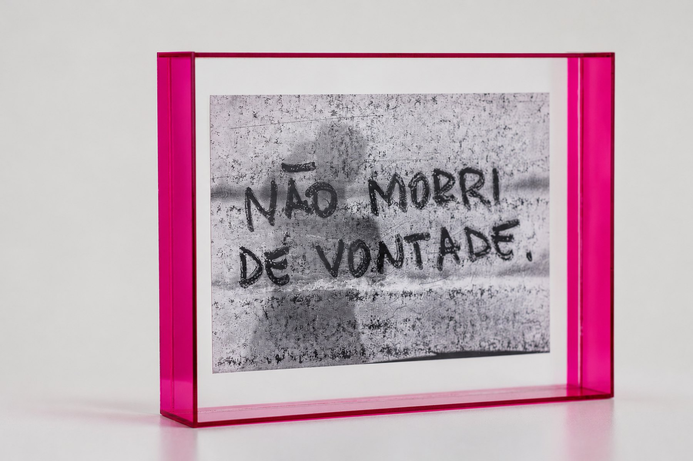
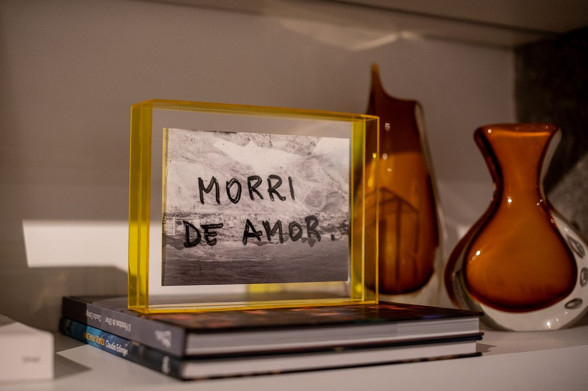
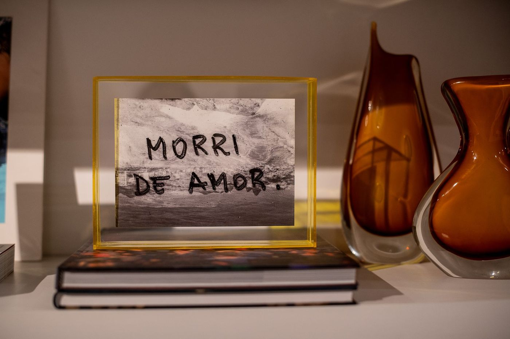
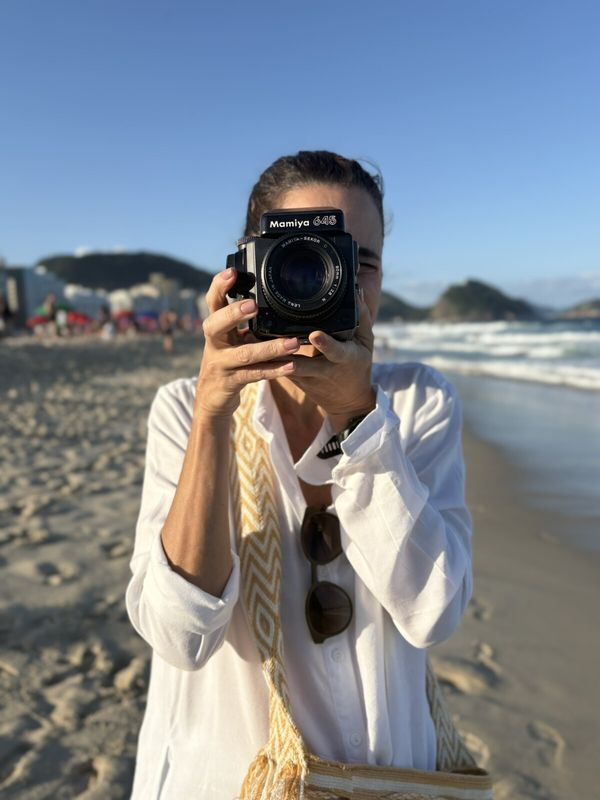
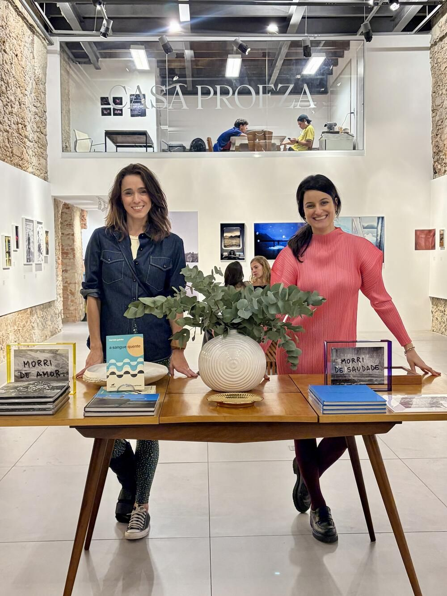
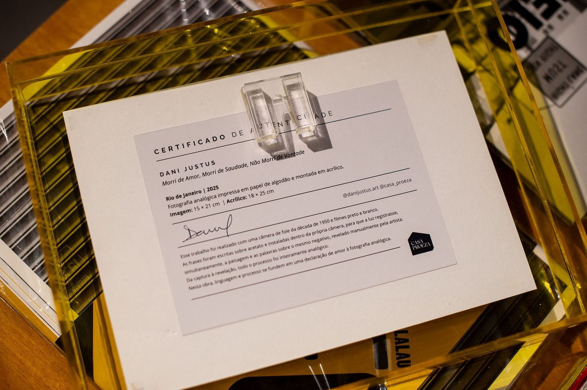

Dani Justus em parceria com a Casa Proeza

Três fotografias analógicas da série Cartas ao Mar, montadas em acrílico. Edição assinada.
R$ 590 cada, edição assinada. Toque na foto para ampliar.

Acrílico amarelo
Fotografia analógica impressa em papel fotográfico e montada em acrílico.
Fotografia: 15 × 21 cm
Acrílico: 19 × 25 cm
R$ 590,00
Comprar pelo WhatsApp
Acrílico violeta
Fotografia analógica impressa em papel fotográfico e montada em acrílico.
Fotografia: 15 × 21 cm
Acrílico: 19 × 25 cm
R$ 590,00
Comprar pelo WhatsApp
Acrílico rosa
Fotografia analógica impressa em papel fotográfico e montada em acrílico.
Fotografia: 15 × 21 cm
Acrílico: 19 × 25 cm
R$ 590,00
Comprar pelo WhatsApp

Morri de Amor, Morri de Saudade, Não Morri de Vontade faz parte da série Cartas ao Mar e nasce da urgência de se manifestar. De um desejo persistente de expressão que encontra na fotografia um lugar possível, que vai além do registro e encontra a invenção.
Aqui a artista interfere no processo analógico: escreve no negativo, sobrepõe tempos, criando múltiplas exposições que se costuram como manifestos. O mar e o Rio aparecem como destino simbólico dessas cartas.
As três fotografias foram feitas com uma câmera de fole da década de 1950, utilizando filmes preto e branco. As frases foram escritas sobre um pedaço de acetato e instaladas dentro da própria câmera, para que a luz registrasse, ao mesmo tempo, a paisagem e as palavras sobre o mesmo negativo. Todo esse processo foi realizado de forma inteiramente analógica.
Depois de uma primeira montagem em um único acrílico, este trabalho ganha agora um novo formato em colaboração com a Casa Proeza.

Fotógrafa brasileira, baseada no Rio de Janeiro, com mais de duas décadas de atuação profissional.
Sua pesquisa mergulha nos processos analógicos e na investigação da interrupção do tempo. Seu trabalho nasce do gesto de fotografar sem pré-visualização, aceitando o destino da imagem que só se revela a posteriori.
Utilizando câmeras antigas, filmes vencidos, múltiplas exposições e processos experimentais, a artista incorpora o erro, o acaso e as instabilidades do material como partes indissociáveis da obra.
Na produção atual de Dani, fotografar é o ato de desacelerar o tempo e aceitar, com todas as suas nuances e ruídos, aquilo que permanece.

Dani Justus e Duda Ballesteros na Casa Proeza
A Casa Proeza é uma galeria de arte especializada em fotografia, instalada em um sobrado centenário restaurado no Centro Histórico do Rio de Janeiro. Conecta arte, design e cidade por meio de uma programação voltada às artes visuais, propondo um modelo híbrido de espaço cultural.
Além das exposições, conta com uma loja de livros, múltiplos e objetos de design, e um segundo andar dedicado à apresentação de projetos curatoriais experimentais, ampliando o diálogo entre artistas, público e cidade.
Rua do Ouvidor, 26, Centro, Rio de Janeiro.

Cada obra vai assinada e com certificado de autenticidade.
Pix ou cartão de crédito, em até 3 vezes. Combinado direto pelo WhatsApp.
Cada peça é montada sob encomenda. Produção em até 10 dias úteis + prazo do frete. Envio para todo o Brasil.